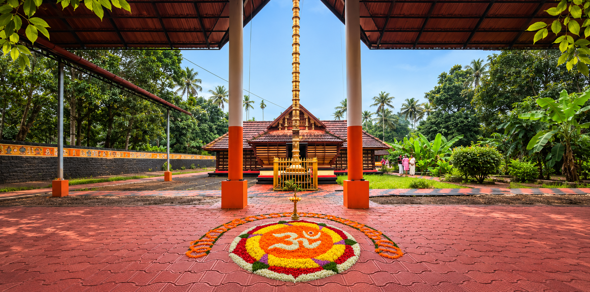
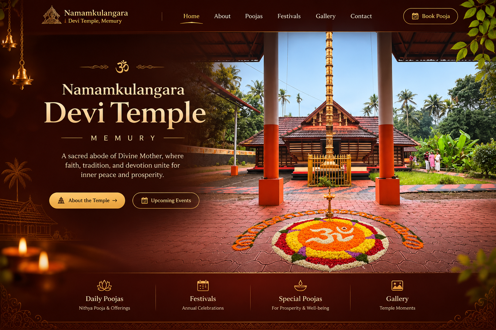

♧
Daily Poojas
Daily rituals and prayers offered with devotion.
A SACRED ABODE OF THE DIVINE MOTHER
Namamkulangara
A sacred abode of Divine Mother, where faith, tradition, and devotion unite for inner peace and prosperity.

✧ OUR TEMPLE ✧
Rooted in the spiritual traditions of Kerala, Namamkulangara Devi Temple is a place for prayer, reflection and togetherness. Devotees gather here to seek the blessings of the Divine Mother and celebrate the enduring spirit of devotion.
Discover the temple →✧ WORSHIP & OFFERINGS ✧
Explore the ways devotees can offer prayers and participate in temple worship.
Daily rituals and prayers offered with devotion.
Special offerings for blessings and well-being.
Participate in traditional offerings at the temple.
✧ CELEBRATING TRADITION ✧
Temple festivals are moments of devotion, culture and community. Discover the rituals and traditions that keep our heritage alive.
Festival Enquiries →✧ SACRED RITUAL ART OF KERALA ✧
A traditional ritual theatre and dance-drama celebrating the victory of Goddess Bhadrakali over the demon Darika.
Mudiyettu is a ritual performance rooted in the Bhadrakali tradition of central Kerala. It brings together storytelling, music, dance, elaborate costumes and devotion. The central story portrays the battle between Goddess Bhadrakali and the demon Darika, symbolising the triumph of good over evil.
The ritual commonly begins with Kalamezhuthu, the creation of a sacred image of the Goddess on the temple floor using natural coloured powders, followed by worship and musical invocations. The dramatic performance then unfolds through traditional characters, expressive movements and the powerful rhythms of instruments such as chenda and elathalam.
Mudiyettu is a community tradition passed from experienced performers to younger generations. It was inscribed in 2010 on UNESCO’s Representative List of the Intangible Cultural Heritage of Humanity, recognising its cultural importance and the collective participation that sustains it.
About this temple: Temple-specific details, dates and local traditions will be added after confirmation by the temple administration.
Explore Mudiyettu on UNESCO →Photographs from the temple’s Mudiyettu celebrations.
✧ A GLIMPSE OF THE TEMPLE ✧
Explore the temple, its sacred atmosphere and visual memories.
May the blessings of the Divine Mother bring peace, strength and happiness to all.
അമ്മേ നാരായണ
✧ PLAN YOUR VISIT ✧
For pooja details, temple timings and festival information, please contact the temple administration.
CONTACT NUMBER+91 XXXXX XXXXX✧ FIND OUR TEMPLE ✧